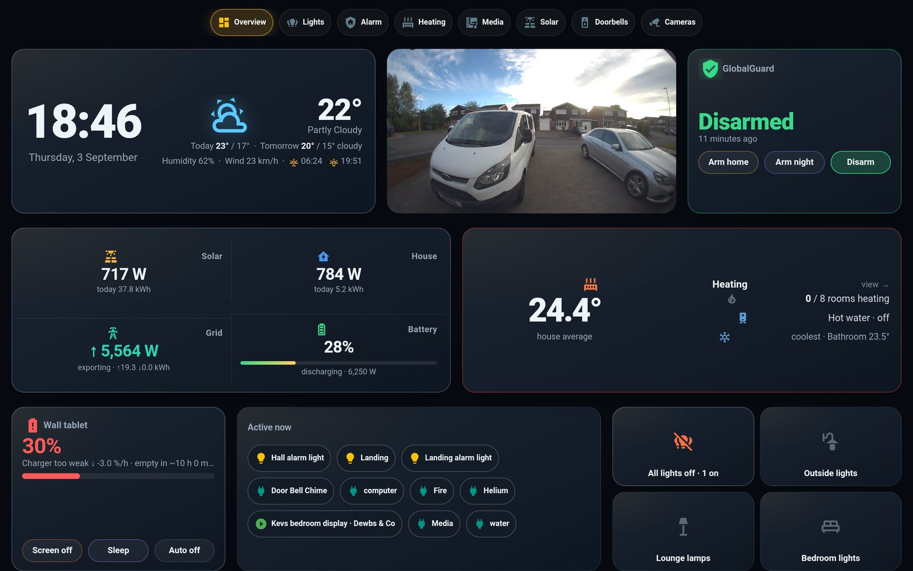
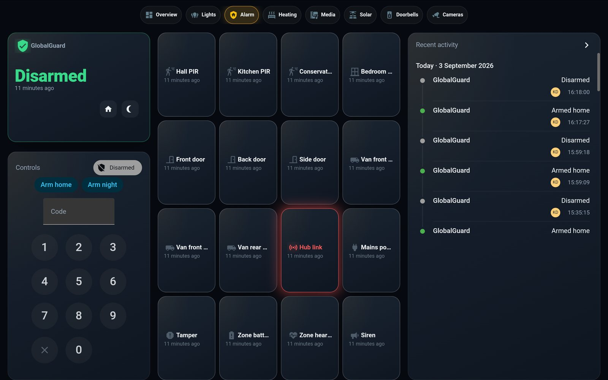
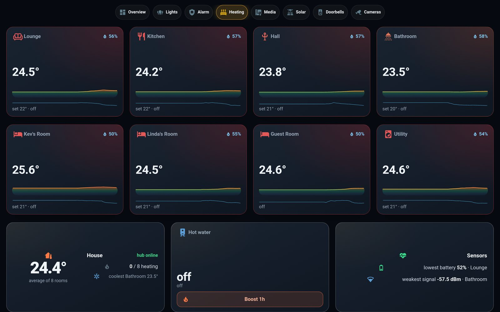
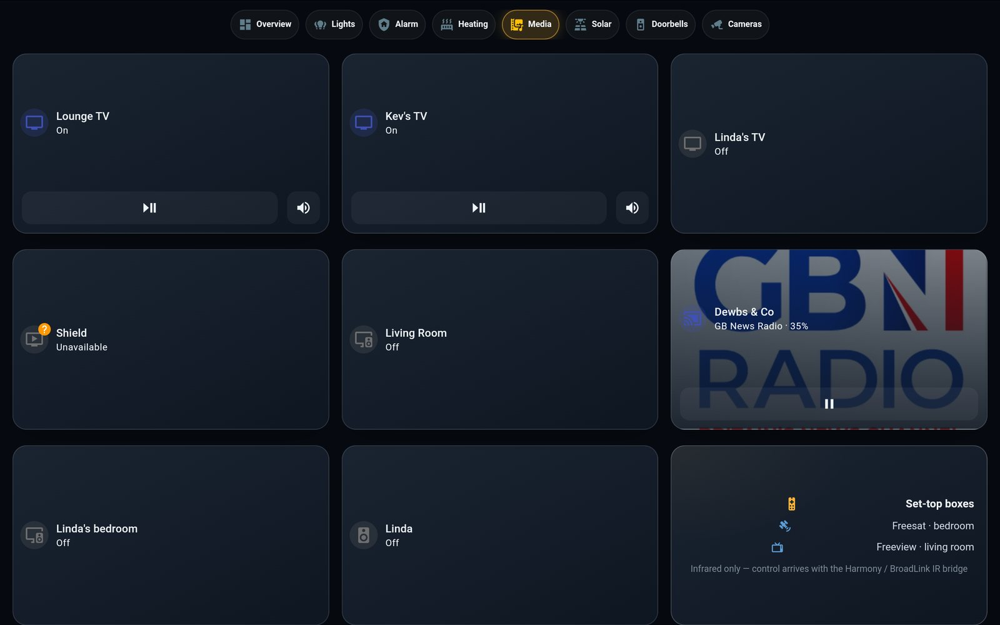
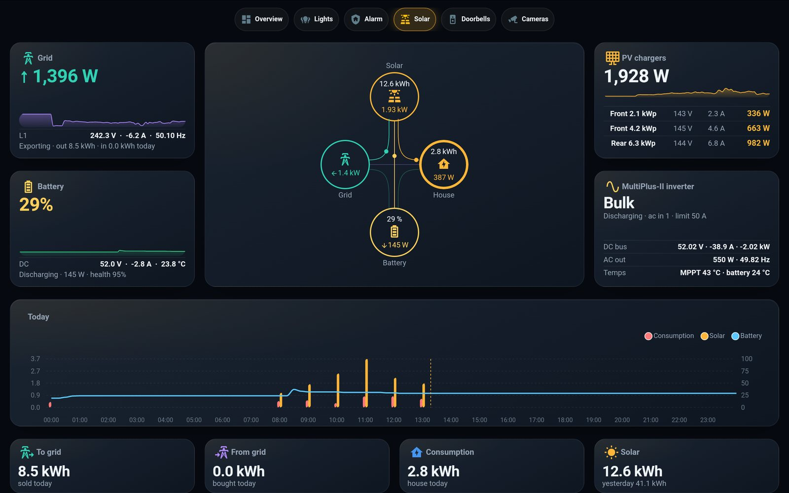
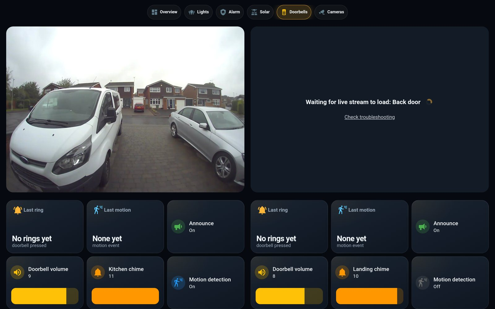

A 2014 Samsung Note that had been dead in a drawer now hangs in the hall in a printed clamshell, showing an eight-tab dashboard that never scrolls: live solar at five-second resolution, the alarm, both doorbells, every light — and it knows whether its own charger is keeping up.
The whole point of a wall panel is that you glance at it. Every tab is a fixed grid that fits the 1280 × 800 screen exactly — no scrolling, no hidden rows. These are the tablet's own screenshots; tap the pills to switch.






The set has since grown to eight. A Heating tab tints eight rooms from cool blue to warm amber by temperature, each with a 24-hour trend, humidity and a tap-through thermostat. A Media tab gathers every TV, streamer and Nest — and paints a room's album art onto its card the moment it starts playing. The Overview's four energy tiles were merged into one card to make room for a heating summary, and you can now swipe left and right between tabs. Only Lights and Cameras are still waiting to be photographed. Since then a Health vitals console and a live Traccar GPS map have joined too — both full web-apps in an iframe.
Home Assistant's stock dashboards scroll and reflow. This one is a hand-written YAML grid that pins every card to a cell of a 100-vh layout, styled by a theme that gives every tile the same gradient, glow and motion.
One tile, four cards deep: a button-card shell with JavaScript templates for the arrows and colours, a mini-graph-card sparkline nested inside it, the theme's card-mod styling, all placed by layout-card.
The Victron system is read over Modbus straight off the LAN — no cloud, no VRM portal — every five seconds. Derived sensors turn watts into the day's kilowatt-hours, and a recorder filter keeps the database sane at that rate.
The integration's poll interval, dropped to five seconds. That's the difference between "updates now and then" and the sparklines visibly moving — the same feel as Victron's own app, without its cloud.
Grid and battery power are split into import/export and charge/discharge, integrated into energy, then cut into daily meters — so the tiles read sold today, bought today, house today.
Polling 453 entities every five seconds would flood the history database. A filter records only the eighteen values the panel charts; everything else stays live but unrecorded.
The tablet reports no charge current — only its battery percentage. So the panel measures the trend over twenty minutes and colours itself: green if it's gaining, red if it's plugged in but falling, amber if the charger is only just holding. Try the physics.
A tablet won't clip into a rigid printed lip — a 250 mm edge needs tens of kilograms to flex over — so the case is two halves that clamp it from left and right, which also happens to fit a 220 mm print bed. The left half drops onto its screws, the right half slides in sideways onto its own screws and into the seam’s dovetail fingers, and two spring latches click. Drag to rotate, scrub to assemble.
How it was made: not in a CAD app — the case is generated by a Python script with real constructive solid geometry, and a verification script runs fifty-odd geometric assertions after every parameter change: the tablet fits with worst-case tolerances, the fingers key the halves, only the barbs resist pulling apart, every latch beam and finger sits on the print bed, every opening is clear through, a 9 mm screw head passes the keyholes and a 4 mm shank is trapped. Print both halves flat, no supports. Four M4 countersunk screws in the wall on a 156 × 104 mm rectangle, heads 2 mm proud; drop the left half onto its two, lay the tablet in, offer the right half up 14 mm to the right and push it left until both latches click.
A 2014 battery on a modest charger can't run a bright screen all day and charge — only a screen that's fully off gains ground. So the panel steps through four power states on its own, and Home Assistant wakes the screen in software the instant something matters, so nothing is missed.
The four states
What wakes it
The honest long-term fix for an always-on wall tablet — remove the eleven-year-old cell and feed the tablet directly. It also removes the one real hazard of a lithium battery sealed to a wall: swelling. The trick is to keep the pack's own little circuit board.
That PCB on the cell is the battery's BMS — protection, thermistor and gauge. Separate the pouch, keep the board, and feed a regulated ~4.0 V into its cell pads. The tablet still sees a normal battery, so no faked sensors and no boot refusal.
A buck converter rated for the tablet's >2 A peaks holds ~4.0 V; the charger sees "nearly full" and idles. Nothing left to drain or swell, so the panel can stay bright all day and the power manager becomes optional.
Full method, schematic and safety notes on the Technical page →
The dashboard went from "a three out of ten" to this in one day of iteration against tablet screenshots. Most of the time went on these.
A drawer-bound tablet, a printed clamshell, and a dashboard that shows the solar moving in real time, arms the alarm, answers the door and keeps an eye on its own battery — all from the Pi in the cupboard, nothing in the cloud. Next on the list: a switchable LCARS skin, and cameras when they arrive.
{kind=link}
{kind=link}
{kind=link}
{kind=link}
{kind=link}
{kind=link}